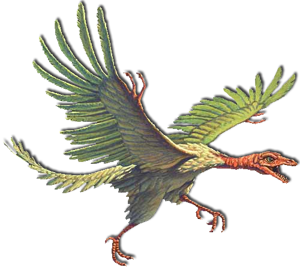

Археоптерикс
З грецької ἀρχαῖος — древній, πτέρυξ — крило
Динозавр, схожий на птаха (або динозавроподібний птах), дивував покоління палеонтологів, які продовжують вивчати його добре збережені скам'янілості, щоб дійти остаточного висновку про його зовнішній вигляд, спосіб життя та обмін речовин.Деякі люди, все ще наполягають на тому, що археоптерикс був першим справжнім птахом, але насправді це не так. Археоптерикс витримав останні 150 мільйонів років надзвичайно добре; близько десятка майже повних скелетів були розкопані з німецьких викопних грядок Зольхофена, проливаючи вкрай необхідне світло на еволюцію пернатих динозаврів.
- Розміри: довжина — близько 0,5 метрів, розміром з ворону
- Період існування: Пізній Юрський період, 147 мільйонів років тому
- За типом харчування: хижий
- Місце відкриття: Німеччина
Цетіозавр
З грецької κῆτος — кит, σαῦρος — ящірка
Динозавр, схожий на кита формою тулуба, масивний хвіст, що міг досягати 40 хребтів. Ці титани з маленькими головами та довгою шиєю були несхожими на все, що еволюціонувало до або після цього, і вони були настільки дивними, що палеонтологи досі обговорюють основи того, як насправді жили цетіозаври.У 1841 році британський анатом Річард Оуен описав цікаву колекцію кісток кінцівок і хребців, знайдених у різних місцях Англії. Елементи кінцівок нагадували Оуену ті самі кістки у крокодилів, а хребці нагадували такі, як у китів. Розсіяні елементи за структурою були подібні до притаманних водним тваринам, і Оуен вважав, що Цетіозавр - «китова ящірка» - мабуть, був морським мешканцем, більшим за все, що було знайдено раніше.
- Розміри: довжина — близько 18 метрів, висота — близько 3 метрів
- Період існування: Середній Юрський період, 170-160 мільйонів років тому
- За типом харчування: рослиноїдний
- Місце відкриття: Англія, Велика Британія
Мегалозавр
З грецької μεγάλος — величезний, σαῦρος — ящірка
Загалом, Мегалозавр мав типову будову великого теропода. Він був двоногим, горизонтальний тулуб врівноважений довгим горизонтальним хвостом. Задні кінцівки були довгими і міцними з трьома/чотирма пальцями, що несли вперед вагу, передні - відносно короткі, але надзвичайно міцні і, ймовірно, також мали три пальці. Його велика витягнута голова мала довгі, схожі на кинджал, зуби, щоб нарізати плоть своєї здобичі. Скелет Мегалозавра сильно закостенілий, що вказує на міцну і мускулисту тварину.Мегалозавр був одним із перших відкритих динозаврів.Мегалозавр - лютий хижак вночі, активно полює на багато видів тварин. Однак вдень він лягає і засинає. Поки до сплячого Мегалозавра можна підходити безпечно, якщо доторкнутися або напасти, він раптово прокинеться. Якщо його розбудити, він переслідуватиме нападника на невеликій відстані, хоча рухатиметься мляво, а атаки будуть слабшими.
- Розміри: довжина — близько 9 метрів, висота — близько 3 метрів
- Період існування: Середній Юрський період, 170-155 мільйонів років тому
- За типом харчування: хижий
- Місце відкриття: Англія, Велика Британія
Ігуанодон
З грецької ігуана, ὀδούς — зуб
Ігуанодон - це середній за розмірами динозавр. Натомість у тварини є два ,схожі на колосок, великі пальці для вживання фруктів, смачного насіння та як засіб захисту, щоб заколоти можливих хижаків. Вони здатні ходити на карачках, як і на задніх лапах.Ігуанодони, як і багато інших травоїдні тварини АРК, є ніжними істотами, які не завдадуть шкоди ні людям, ні іншим тваринам. Однак після нападу вони будуть відбиватися, використовуючи шипи великого пальця в двоножному режимі. Коли вони достатньо поранені або якщо їхній жах підніметься досить високо, вони повернуться і втечуть на всіх чотирьох ногах. Як і інші рослиноїдні тварини, це пастухова тварина і допоможе захистити інших від нападу.
- Розміри: довжина — близько 10 метрів, висота — близько 2,7 метрів
- Період існування: Ранній Юрський період, 140-110 мільйонів років тому
- За типом харчування: рослиноїдний
- Місце відкриття: Англія, Велика Британія; Бельгія